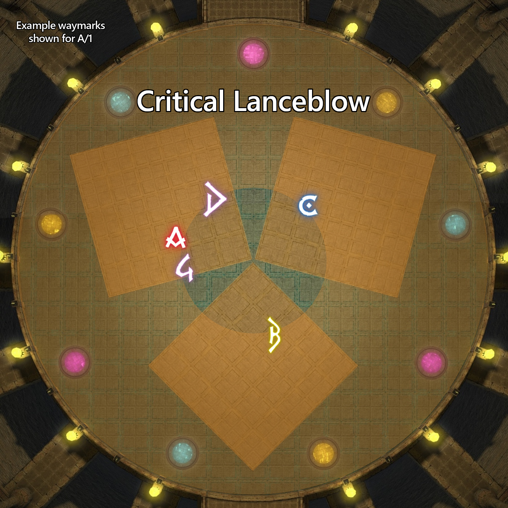
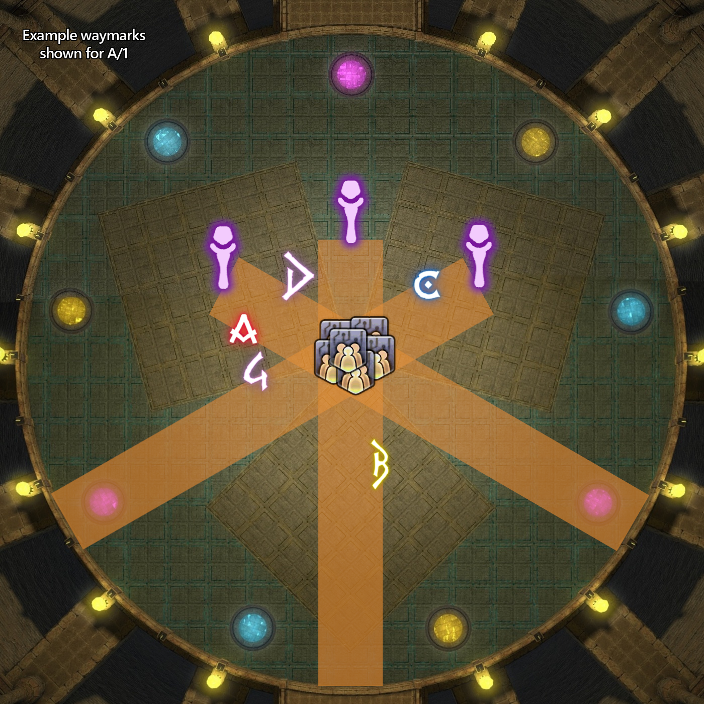
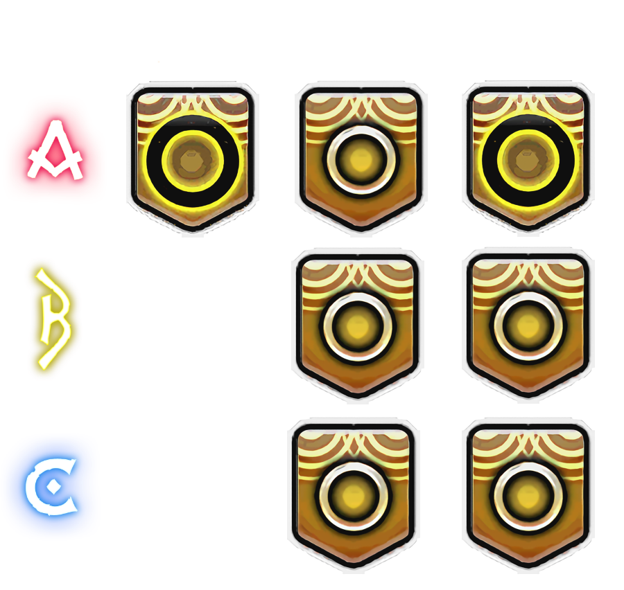
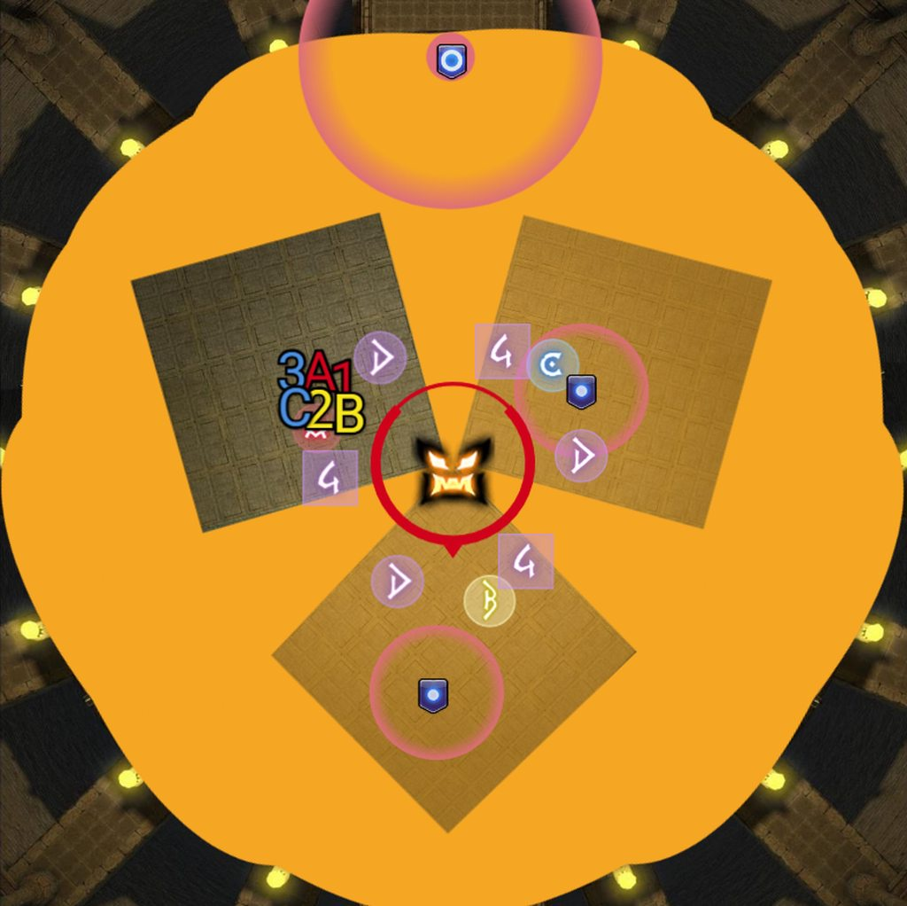
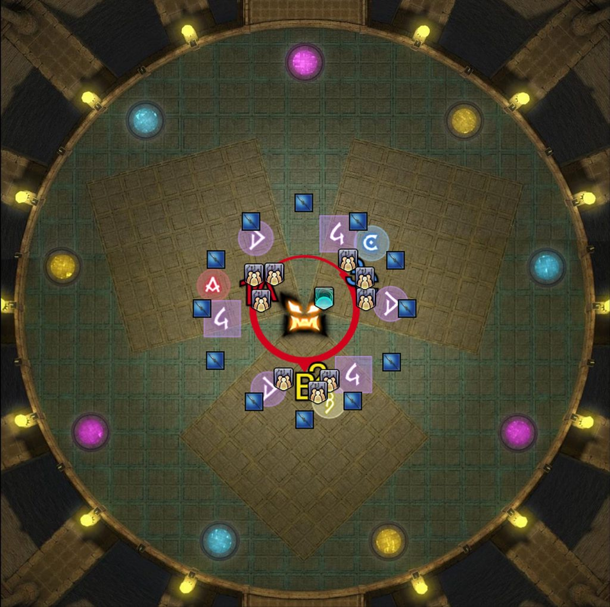

Magitaur
"This monstrous brute guards the uppermost floor of the Tower of Blood. Although voidsent of its ilk are seldom endowed with much intelligence, this specimen is capable of complex combat techniques, guided by skillful manipulation of magical stone tablets. However, it is Magitaur's arsenal of dread weapons, including the rune axe, the sage's staff, the assassin's dagger, and the holy lance─all of which date back to the War of the Magi─that make it an opponent as treacherous as any of its more elevated kin."
Overview
Magitaur is the final guardian of the Forked Tower: Blood. The arena has two relevant parts that are referenced throughout this guide:
- Platforms: The three large squares on the ground.
- Non-platforms: The area outside of these squares.
Simulator
You can find a simulator for the core mechanics here.
Fight Timeline
Weapon Mechanics: Axe and Lance
- Throughout the fight the boss will resolve mechanics based on the weapon he activated.
- Activated weapons will also have a glow to them.
- Axe will hit players or the area close to the boss.
- Lance will hit players or the area furthest away from the boss.
Unseal:
- Determines where auto-attacks go, hitting 2 tanks per platform:
- Tanks go inside the hitbox for Axe, or outside the hitbox for Lance.
- The party stays on the hitbox ring.
Critical Axe- or Lanceblow:
- Spawns AoEs covering the majority of the arena. The safe spots are as follows:
- Axe: Stay on the platform, far away from the boss.
- Lance: Move off the platform, close to the boss.


Assassin's Dagger
- 3 lines spawn in one of two patterns:
- Going straight through each platform, or
- Going through the spaces in between.
- These lines are referred to as Daggers.
- Daggers always travel outward and then shoot back in, hitting twice per Dagger.
- The lines rotate from their starting position for 6 Daggers total (12 AoEs).
- A Critical Axe- or Lanceblow follows after the 3rd Dagger and again after the last.


Forked Fury
- Targets 2 players per platform: the closest and farthest player from the boss.
- Tanks 1 stay inside the hitbox; Tanks 2 stay outside the hitbox.
- The party stays on the hitbox ring.
- Always followed by auto-attacks on tanks.
- Use Phantom Guard to mitigate.
- Use your 40% and your 25-second cooldowns.
Conduits (Canisters)
The boss casts either Aura Burst, activating the Axe, or Holy, activating the Lance. The glowing weapon always matches the Unseal cast immediately before.
- The conduit matching the boss's active weapon colour must die before the raidwide resolves. Failure to kill it in time wipes the group.
- Two conduits spawn behind each platform:
- A blue Lance conduit with an animated sphere in the middle.
- A yellow Axe conduit with an animated donut in the middle.
- A single purple conduit spawns in one of the spots between platforms (sphere + donut).
- Every platform group finds and destroys the conduit behind their platform that matches the boss's active weapon colour. Ignore the boss entirely during this time.
- 2 Phantom Knights position below the targeted conduit to bait the tankbuster when it dies. Press Pledge when the conduit reaches 40% HP.
- Non-Knight tanks can take the hit using invuln if required.
- The purple conduit is handled by the assigned Phantom Berserker.
Sage's Staff
- Three Staffs spawn next to each other: 2 on a platform, 1 in the space between those two.
- Each Staff fires a line stack in the direction of the closest player.
- These line stacks do not apply vulnerability debuffs.
The mechanic resolves as follows:
- Dodge a Critical Axe- or Lanceblow.
- Bait a line stack, typically through the middle of the arena.
- Repeat a second time.
- The mechanic ends with a quick raidwide after the second stack.

Rune Axe
- The boss assigns debuffs based on platforms. There are two types: big and small.
- Platform A receives 2 big debuffs (one short, one long) and 1 small debuff.
- Platforms B and C each receive 2 small debuffs (one shorter, one longer).
- This creates a total of 5 small and 2 big AoEs, resolving in 3 sets.
- Between the second and third set of AoEs, there is an additional Critical Lanceblow to dodge.
- The debuff is indicated by a circle AoE around the affected player. This circle AoE explodes the entire area it hits:
- A debuff resolving on a platform will explode that platform.
- A debuff resolving outside a platform will explode the rest of the arena.

The mechanic resolves as follows:
- The short big AoE moves behind any purple conduit. Everyone except the 3 small AoEs moves off their platform.
- Small AoEs stay at the centre of their platform and do not clip the edges.
- Move off the platform and near the boss for the Critical Lanceblow. Sprint helps.
- For the second set of AoEs (1 big and 2 small):
- The big AoE moves behind any purple conduit.
- The 2 small AoEs return to their platform (B and C).
- Everyone else moves north-west to the A platform.


Holy Lance
- 12 Lances spawn around the arena, always starting north and going clockwise.
- Each Lance cleaves either the platform it overlaps or the area outside of it.
- The boss applies a debuff to 3 players on each platform (9 total). When the timer expires, the debuff becomes a stack. All timers are synced between platforms.
- The mechanic always starts with a Critical Lanceblow and ends with a Critical Axeblow. Dodge the Critical Lanceblow and immediately return to your platform.
The lances explode clockwise from north:
- North-east platform (C/3):
- Make your way to the back of your platform.
- The 1st Lance explodes on the outside.
- Group C/3: move to the outside (you can clip your own platform with your stack) and wait for 3 Lances to resolve.
- Once the last Lance on your platform resolves, move back and keep your stack centred.
- South platform (B/2):
- Make your way to the back of your platform.
- One Lance explodes on the outside.
- Group B/2: move to the outside and wait for 3 Lances to resolve.
- Once the last Lance on your platform resolves, move back and keep your stack centred.
- North-west platform (A/1):
- Make your way to the back of your platform.
- One Lance explodes on the outside.
- Group A/1: move to the outside and wait for 3 Lances to resolve.
- The boss then casts Critical Axeblow. Move far away on your platform.
The mechanic ends with a raidwide.


How do we resolve mechanics?
Markers will be different per party, as shown in the image below.
- Waymarks A, B, and C are used for orientation. Waymarks D and 4 are placed for the Assassin's Dagger mechanic.
- Platform assignments:
- Parties A & 1: North-West platform.
- Parties B & 2: South platform.
- Parties C & 3: North-East platform.

Assassin's Dagger:
- Look at the boss and start on the marker left of the Dagger that hits your platform.
- Wait for 3 Daggers (6 lines).
- Move for Critical Axe- or Lanceblow.
- Wait for 1 more Dagger (2 lines).
- Move to your platform's letter marker (A, B, or C).
- Wait for 2 more Daggers (4 lines).
- Move for Critical Axe- or Lanceblow.
Forked Fury and Conduits:
- Tank 1 from each party stays close to the boss, inside the hitbox.
- Tank 2 from each party stays at max melee range, outside the hitbox.
Knight-less Conduits:
- If your party does not have a Phantom Knight, Tank 2 takes the first conduit and Tank 1 takes the second.
- Third conduits are unlikely at this time. Per-run adjustments will be made if they appear.
Knight Conduits:
- If your party has a Phantom Knight, they take each conduit using Pledge. If there is also a Phantom Berserker who wants a conduit, discuss an order with them or follow the Knight-less order above.